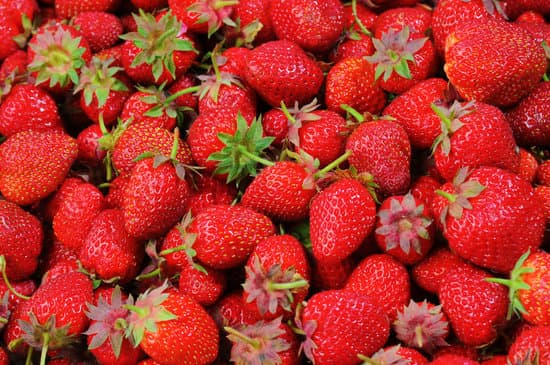
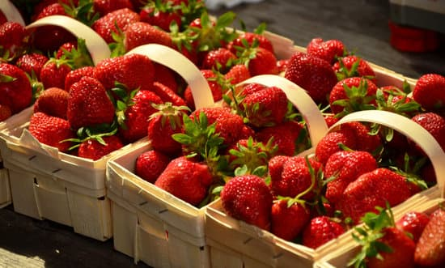

Maduración
Es cuando el fruto está en un estado adecuado para su consumo en fresco o procesamiento industrial con todas las características organolépticas (sabor, textura, color, aroma, composición nutricional, entre otras).

Técnicas de cultivo
- Acolchado plástico
- Cultivo en hidroponía
- Cultivo en sustrato

Afectaciones
- Pérdida de firmeza del fruto
- Desarrollo de color no uniforme
- Pérdida de sabor y aroma
- Susceptibilidad a enfermedades postcosecha
- Pérdida de contenido nutricional